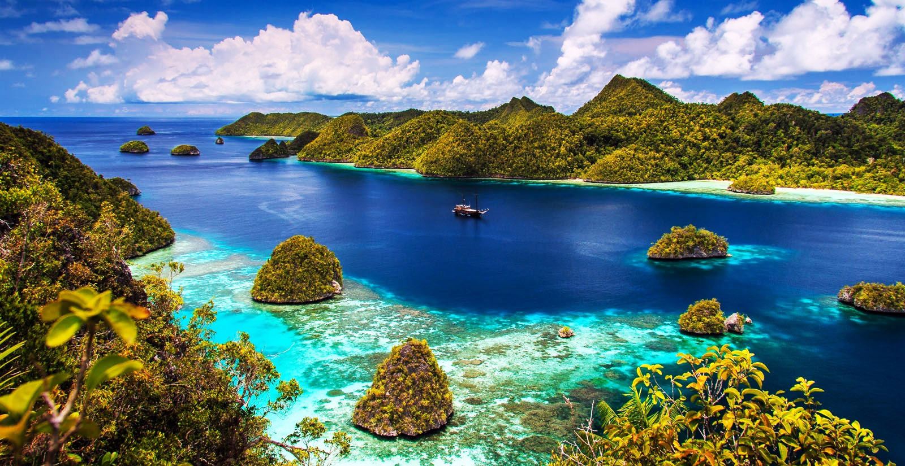
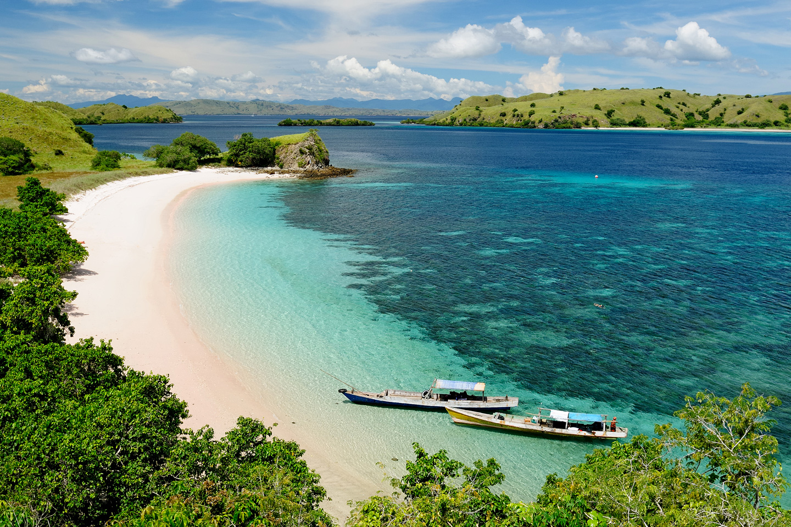
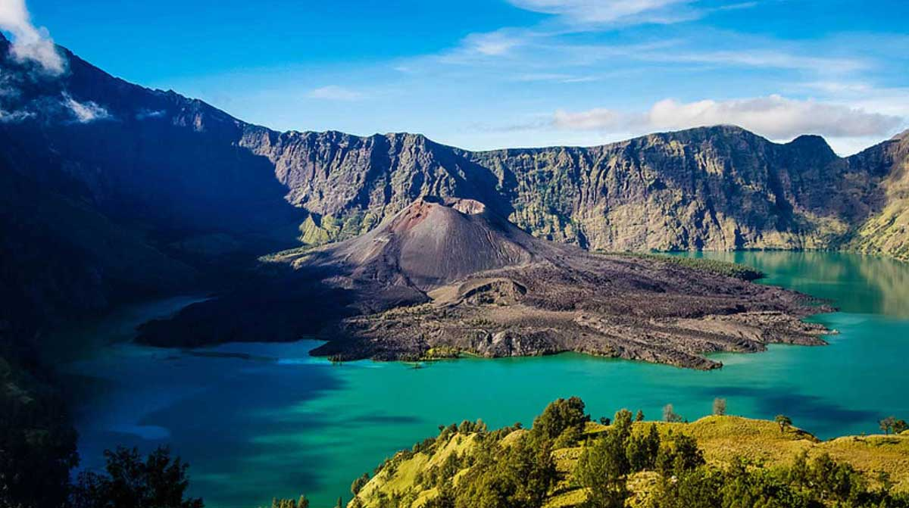
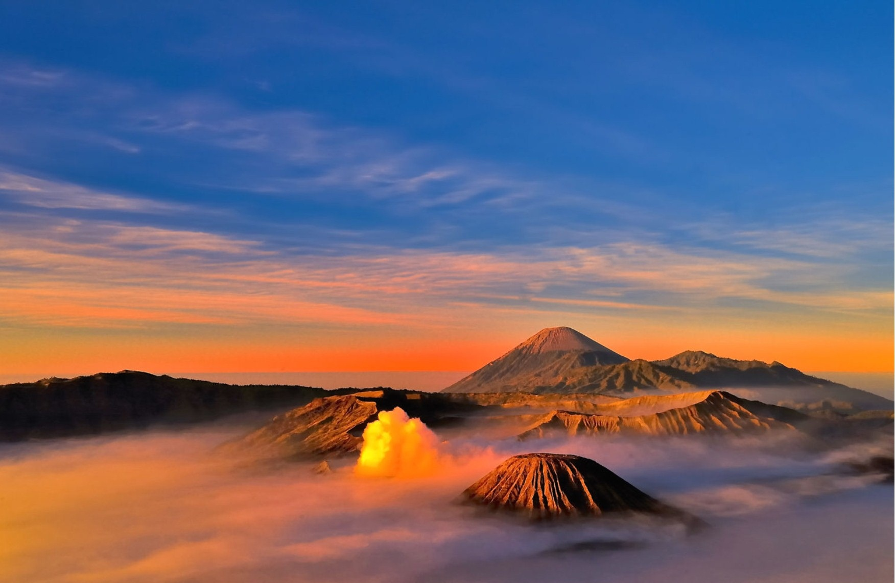
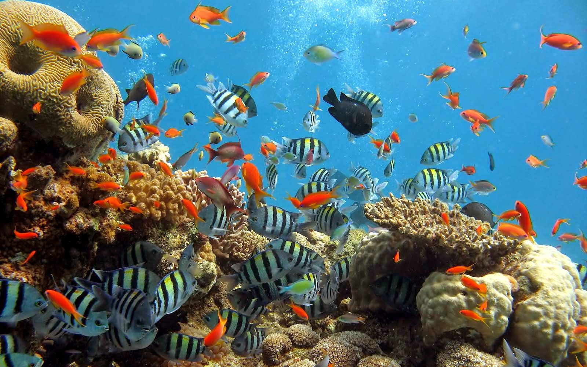

5 Tempat Wisata Wajib di Indonesia1. BaliBali adalah primadona pariwisata Indonesia yang sudah terkenal di seluruh dunia. Selain terkenal dengan keindahan alam, terutama pantainya, Bali juga terkenal dengan kesenian dan budayanya yang unik dan menarik. Industri pariwisata berpusat di Bali Selatan dan di beberapa daerah lainnya. Lokasi wisata yang utama adalah Kuta dan sekitarnya seperti Legian dan Seminyak, daerah timur kota seperti Sanur, pusat kota seperti Ubud, dan di daerah selatan seperti Jimbaran, Nusa Dua dan Pecatu. |
2. Pulau Flores, Nusa Tenggara TimurDanau Toba adalah danau alami berukuran besar di Indonesia yang berada di kaldera Gunung Supervulkan. Danau ini memiliki panjang 100 kilometer, lebar 30 kilometer, dan kedalaman 508 meter. Danau ini terletak di tengah pulau Sumatra bagian utara dengan ketinggian permukaan sekitar 900 meter. |
3. LombokLombok dalam banyak hal mirip dengan Bali, dan pada dasawarsa tahun 1990-an mulai dikenal wisatawan mancanegara. Namun dengan munculnya krisis moneter yang melanda Indonesia pada akhir tahun 1997 dan krisis-krisis lain yang menyertainya, potensi pariwisata agak terlantarkan. Lalu pada awal tahun 2000 terjadi kerusuhan antar-etnis dan antar agama di seluruh Lombok sehingga terjadi pengungsian besar-besaran kaum minoritas. Mereka terutama mengungsi ke pulau Bali. Namun selang beberapa lama kemudian situasi sudah menjadi kondusif dan mereka sudah kembali. Pada tahun 2007 sektor pariwisata adalah satu-satunya sektor di Lombok yang berkembang. |
4. Gunung BromoGunung Bromo terkenal sebagai objek wisata utama di Jawa Timur. Sebagai sebuah objek wisata, Bromo menjadi menarik karena statusnya sebagai gunung berapi yang masih aktif. Gunung Bromo termasuk dalam kawasan Taman Nasional Bromo Tengger Semeru. Nama Bromo berasal dari nama dewa utama dalam agama Hindu, Brahma. |
5. Taman Laut Nasional BunakenBunaken adalah taman nasional yang berada di ujung utara Pulau Sulawesi. Taman laut yang sangat terkenal hingga mancanegara ini menyimpan keindahan panorama 390 spesies koral, berbagai jenis ikan seperti ikan hiu, mandarin fish, ikan pari, kuda laut, kura-kura, mamalia laut seperti ikan duyung dan moluska. Penghuni Bunaken yang paling terkenal adalah ikan raja laut purba atau coelacanth yang telah ada sejak zaman prasejarah. Taman Laut Bunaken memiliki 20 titik penyelaman atau dive spot dengan kedalaman bervariasi hingga 1.344 meter. Salah satu pemandangan terindah di Taman Laut Bunaken adalah underwater great walls yang menjadi sumber kehidupan bagi ikan-ikan di perairan ini. |